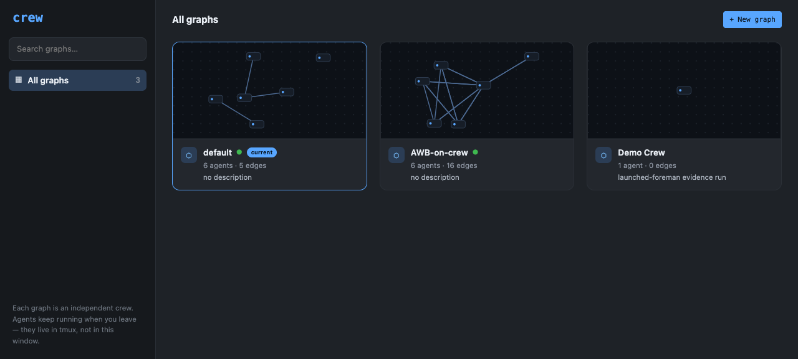
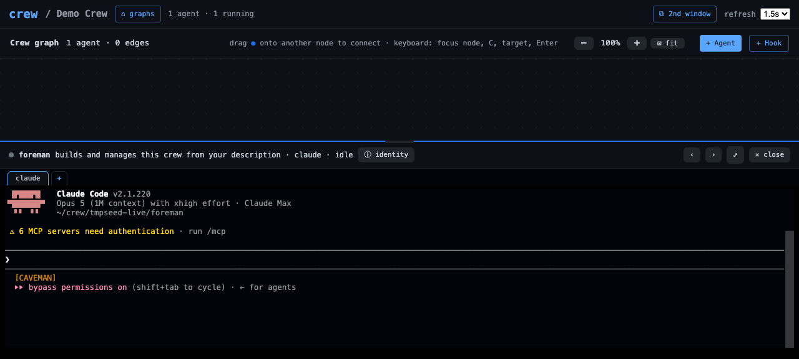

Every new crew graph starts with a chat-to-build foreman ready to configure it: the dashboard gallery and 'crew project create' both seed the same launched foreman agent, so opening a new graph begins with one question — describe the system you want to build.
Feature IDforeman-ready-graphs
Created2026-07-27
Surfacescli
Dependenciesnone
User flow
Start state
The dashboard gallery
already seeded a chat-to-build foreman into every graph it created —
but that behavior lived inline in the server, and the CLI's
crew project create made bare graphs: no foreman, no
display title. A graph's readiness depended on which surface created
it.
Outcome
Opening a new graph starts
the same everywhere. crew project create name --title
"Demo Crew" registers the graph and seeds the same launched
foreman the gallery does: one agent, ⚑ foreman, whose
terminal greets with "Describe the system you want to build." and
then builds the crew itself. --no-foreman keeps the old
bare graph; --no-launch provisions the foreman without
booting its runtime. One shared implementation
(crew.spawn.seed_foreman) now backs both
surfaces.
Architecture
Both creation surfaces register the graph first, then call
one shared seeder. It runs bin/crew --project <name>
spawn-agent foreman --foreman in a child process whose
environment drops the caller's app/port/capability pins — project
identity is read live from the environment across crew, so seeding a
graph that is not the caller's current project requires a scoped
child, and the new graph must never inherit a dashboard's tenant.
A failed seed never unwinds the graph; both surfaces report it
honestly and leave a working manual fallback.
Public interface
Commands and APIs
crew project create <name> [--title "..."]
[--description "..."] [--no-foreman] [--no-launch] — seeds by
default, prints the seed outcome, and exits 0 with a warning (plus a
manual spawn-agent foreman --foreman fallback) if only
the seed fails. POST /api/project/create keeps its
exact contract (foreman/launch booleans,
foreman: "foreman"|null and a warning on
seed failure) — it now routes through the same
crew.spawn.seed_foreman(project, launch), which is the
one public seeding entry point in Python.
Data and lifecycle
The seeded
foreman is an ordinary durable agent row — name foreman,
can_edit_graph true, the shared seed identity and role
(crew.spawn.FOREMAN_SEED_IDENTITY /
FOREMAN_SEED_ROLE) — owned by the new graph's own
MorphDB app. Nothing new persists anywhere else:
--title lands in the existing registry entry
(var/projects.json) exactly as gallery titles do.
Removing the graph removes the foreman with it; a seeded-but-refused
graph never leaves debris because guard checks run before any tmux
session or home directory exists.
Security and failure boundaries
Authority
Nothing in this feature
relaxes an existing gate. Creating a project stays human-only
(guard op project_create: live-pane actor identity on
the CLI, operator capability on the dashboard), and the seeded
foreman goes through the full human-gated --foreman
spawn path, including the one-foreman-per-graph singleton check. An
agent actor cannot reach the seeder: it cannot create projects, and
it cannot pass --foreman to spawn. The seed child's
environment drops CREW_APP, CREW_PORT, and
CREW_DASHBOARD_CAPABILITY so a new graph never inherits the
caller's tenant pin or capability.
Failure behavior
The graph outlives
its seed. If the foreman subprocess fails or times out, the CLI
prints a warning with the failure tail and a copyable manual
fallback but still exits 0 — the project and its MorphDB app really
exist; the dashboard returns ok true with
foreman null and the same warning, which
the gallery shows as a red toast. Seeder exceptions
(OSError, timeout) are converted to that same honest
reporting, never a traceback.
Rollout and reversal
The dashboard path is behavior-preserving — same
request and response contract, same seeded agent, now through the
shared helper. The CLI's default changes deliberately from "bare
graph" to "foreman-ready graph" to match the gallery;
--no-foreman is the exact old behavior. Reversal:
revert the commit — no stored data changes shape, and graphs created
while the feature was live keep working because their foreman is an
ordinary agent row.
created project 'tmpseed-live'; seeded foreman 'foreman' (booting). Seconds later crew status showed foreman / claude / session up / idle, and its tmux pane held a live Claude Code session at the ready prompt. The graph then opened from the gallery on its own dashboard showing the single ⚑ foreman node. Fixture fully removed afterward.
seeded foreman 'foreman' (not started (--no-launch)); the durable row read can_edit_graph True, runtime claude, status not_started, and /api/projects listed the graph with title "Tmp Seed CLI", agents 1, preview nodes [foreman]. Fixture fully removed afterward.
Ran 77 tests — OK. The 26 new ones pin the seeder's argv and scrubbed child env, its honest failure reporting (stderr/stdout tails, OSError, timeout), the CLI flags (--title/--no-foreman/--no-launch, register-before-seed, warning+fallback on failed seed, exit 0), and the server contract (derived slug seeded, launch/foreman forwarding, warning branch).
python3 -m unittest discover tests
Full suite at the delivered tree: only the documented pre-existing/environmental baseline failures (two dashboard tests, the live-foreman fixture, the public-URL webhook test while an ingress tunnel runs); everything this feature touches passes. No regressions.
python3 scripts/validate_feature_docs.py
feature HTML valid: 6 record(s), template present

The graphs gallery at the tested revision: the
CLI-created Demo Crew card shows its free-text title,
1 agent, and a single-node preview — the seeded foreman — beside
the operator's existing graphs.

The new graph opened on its own dashboard: one
⚑ foreman node, and the dock terminal holding its
live, launched Claude Code session at the ready prompt — the graph
is ready to configure the moment it exists.
Engineering inventory and redaction notes
Declared code: the shared seeder plus seed identity/role
constants (crew/spawn.py), the CLI flags and seed-by-default
behavior (crew/cli.py), and the server switch to the shared
helper (crew/server/app.py — behavior-preserving). Declared
tests: 26 new unit tests in tests/test_projects.py, all hermetic
(subprocess and registry mocked; no MorphDB round trips). Live
fixtures: three throwaway graphs (tmpseed-live, tmpseed-cli,
tmp-foreman-check) — each had its foreman removed, its MorphDB
app deleted, its registry entry unregistered, its home directory
removed, and the sibling dashboard spawned for the launched run
stopped; crew project list confirmed the baseline
afterward. One real Claude session was booted (the launched
evidence run) and killed with its agent. Screenshots were taken
after capability bootstrap scrubbed the URL fragment; the API
transcript uses the placeholder crew-operator-cookie. The
dashboard flow itself is additionally covered by the existing
tests/browser/graphs-gallery.md workflow, unchanged by this
feature.